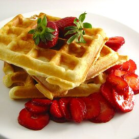

Waffles recipe

Description
An awesome waffle breakfast for the morning
Ingredients
- 2 cups of all purpose flour
- 1 teaspoon salt
- 4 teaspoons baking powder
- 2 tablespoons white sugar
- 2 eggs
- 1(1/2) cups warm milk
- 1/3 butter
- 1 teaspoon vanilla extract
Steps
- In a large bowl, mix together flour, salt, baking powder
and sugar; set aside. Preheat waffle iron to desired temperature.
-
In a separate bowl, beat the eggs. Stir in the milk, butter and vanilla.
Pour the milk mixture into the flour mixture; beat until blended.
-
Ladle the batter into a preheated waffle iron.
Cook the waffles until golden and crisp. Serve immediately.